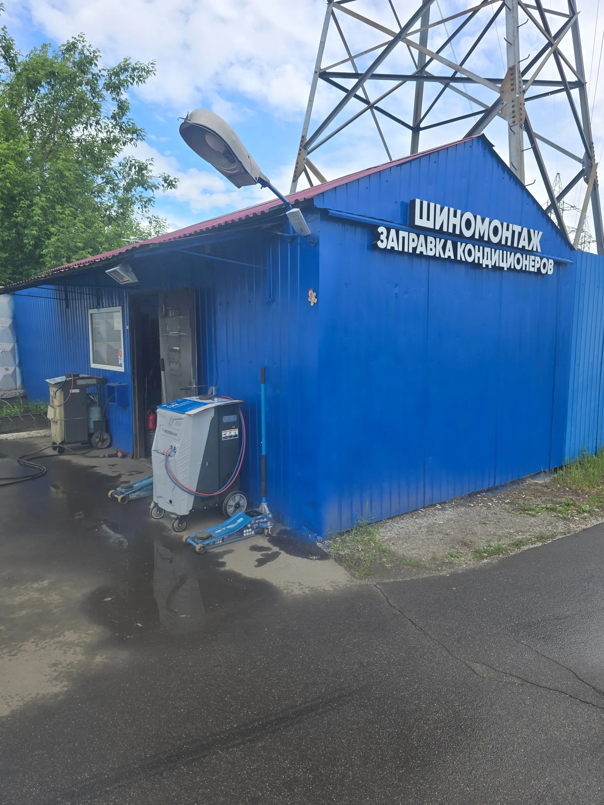
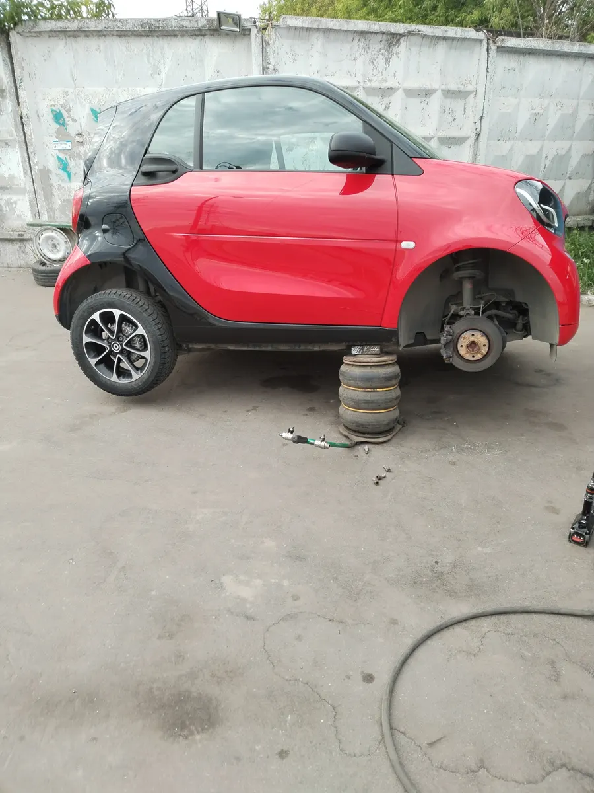
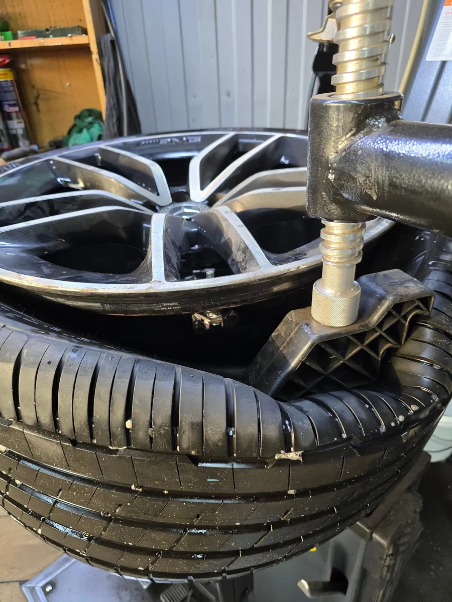
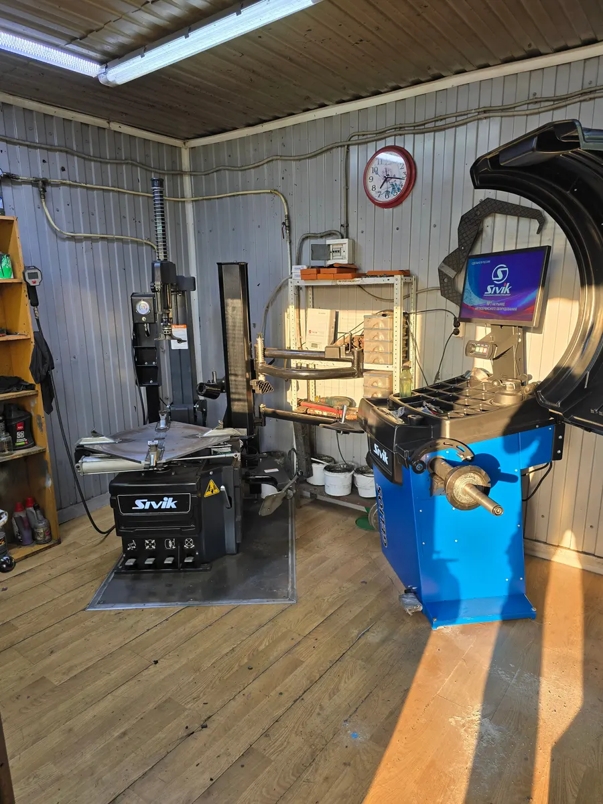

Аллея Кремлёвских Курсантов, 3
Шиномонтаж в Москве у мастера, к которому ездят годами
Переобувка, балансировка, ремонт проколов, хранение шин и заправка кондиционеров. Каждый день с 09:00 до 19:30.

- Рейтинг 5,0 на Яндекс.Картах
- Станки Sivik для шиномонтажа и балансировки
- Оплата картой, наличными или по QR-коду
Цены
Перед приездом уточните цену по телефону.
Колёса
- Сезонная замена шин2 000 ₽
- Балансировкауточнить
- Ремонт проколауточнить
- Хранение шинуточнить
Кондиционер
- Заправка кондиционерафреон R134a2 500 ₽
Как проходит
- 01
Звоните перед приездом
Называете радиус колёс и что нужно сделать, узнаёте цену и свободно ли сейчас.
- 02
Приезжаете на аллею Кремлёвских Курсантов, 3
Синий павильон с белой вывеской «Шиномонтаж · Заправка кондиционеров», стоит под опорой ЛЭП.
- 03
Мастер занимается колёсами
Машину поднимают на домкратах перед павильоном, станки стоят внутри.
- 04
Оплачиваете и уезжаете
Картой, наличными или по QR-коду.



За чем к нам едут
К мастеру Валентину
В отзывах его называют по имени. Клиенты пишут, что ездят сюда «больше 5 лет» и «лет 11 не меньше».
Переобуться к сезону
Меняем шины и балансируем колёса. Снятый комплект можно оставить на хранение.
Починить прокол
Ремонтируем проколы. В отзывах – «устранили прокол», «оперативно и качественно сделали ремонт колеса».
Заправить кондиционер
Заправляем автомобильные кондиционеры фреоном R134a.
Отзывы с Яндекс.Карт
«Однозначно рекомендую ! Цена качества , Валентин работает на совесть , лишнее не предлагает , решает проблему быстро и качественно . Потому к нему и очередь ! Не первый год переобуваю машины именно в этом месте , хоть сама и живу в другом районе 😅 Да и по любой проблеме связанной с шинами , еду именно сюда , так как человек никогда не подводил ☺️ По поводу цен, цены приемлемые , услуги стоят своих денег ! Помните Скупой платит дважды .»
Ирина Сум · 20 апреля 2026
«Всем рекомендую данное место как для сезонной смены резины, так и по-любому другому вопросу, связанному с колесами. Здесь вас никто не будет вводить в заблуждение, говорить о наличии якобы кривых дисков и пытаться накручивать на какие-то дополнительные услуги. Мужики работаю на совесть, делают все четко и быстро. Спасибо большое, так держать!»
Саша Т. · 14 ноября 2025
«Отличный шиномонтаж, езжу сюда уже больше 5 лет. Работают профессионалы. Всегда быстро меняют колеса, цена очень приятная (не понаслышке знаю, что в других местах дороже). В общем как ездила сюда, так и продолжу!»
Ольга Вечеслова · 17 ноября 2025
Отзывы с карточки на Яндекс.Картах, без правок.
Контакты
- Адрес
- аллея Кремлёвских Курсантов, 3, Москва
- Часы
- Каждый день 09:00–19:30
- Телефон
- +7 (929) 555-90-11